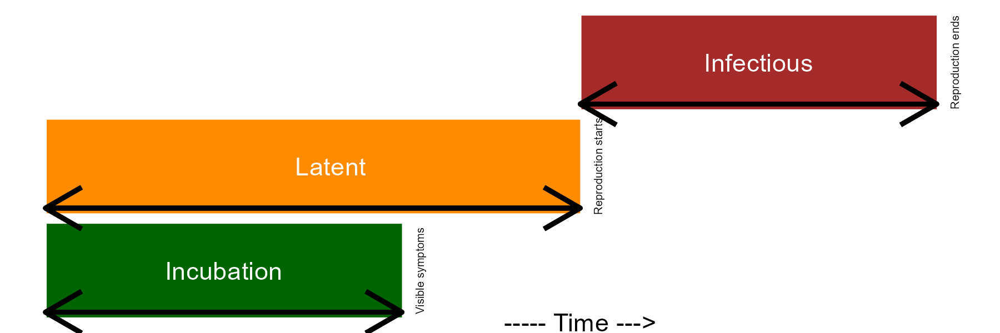
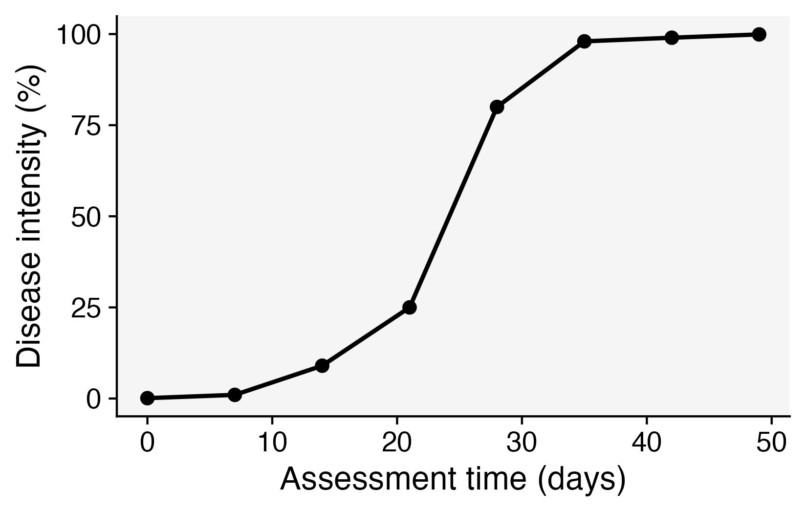
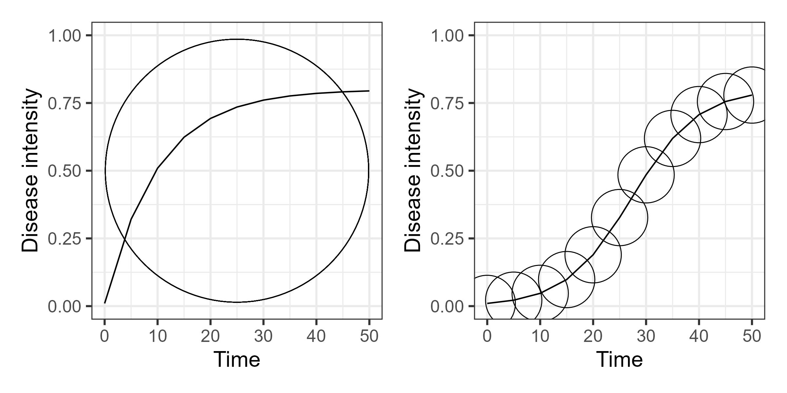
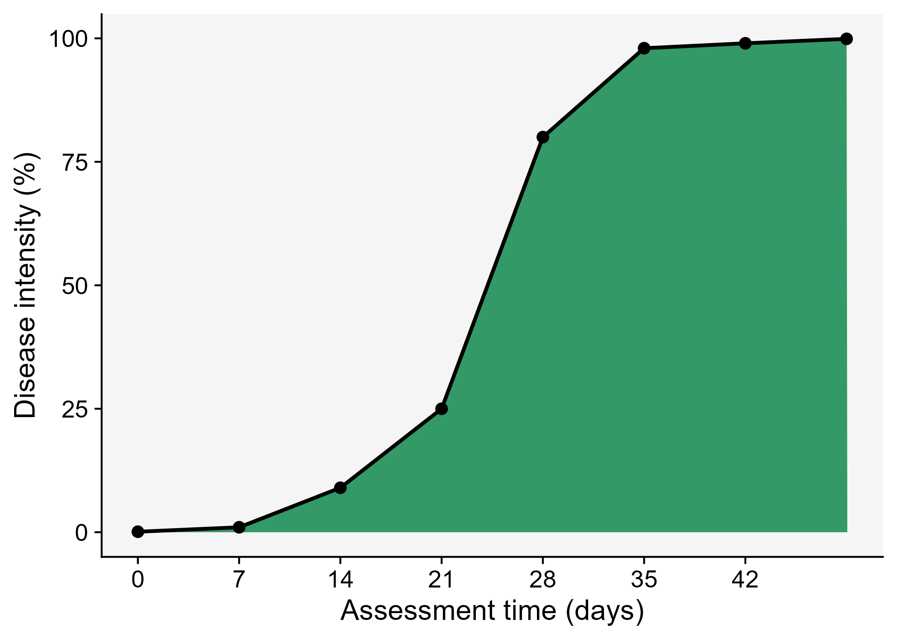
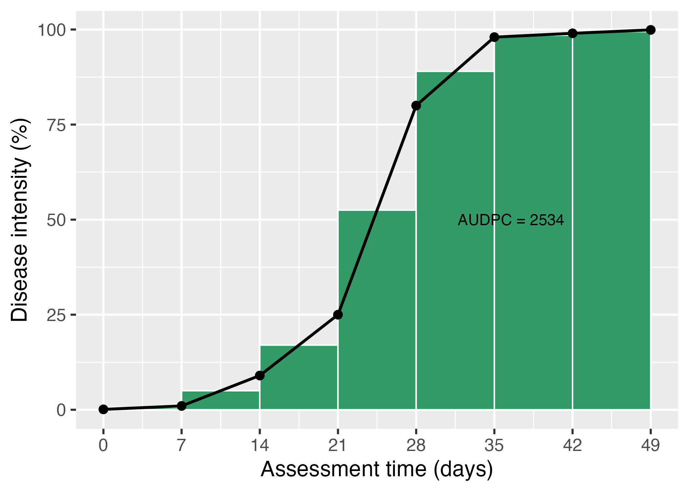

flowchart A[Infection] --> B[Colonization] B --> C[Reproduction] C -. New inoculum .-> D[Dispersal] E[Survival] -- Primary inoculum --> D D --> A D -.-> A C --> E
8 Disease progress curves
This is a work in progress that is currently undergoing heavy technical editing and copy-editing
8.1 How epidemics occur
Before knowing how epidemics develop in time, it is important to understand how an epidemic occur. An epidemic begins when the primary inoculum (a variable number of propagules able to infect the plant) that is surviving somewhere establishes an intimate contact with individuals of the host population - this process is called infection. These inocula are usually surviving externally to the plant host and need to disperse (move), passively or by means of a vector, to reach the plant. It can also be that a growing host encounter a localized (static) source of inoculum.
Once the infection is established, the pathogen colonizes the plant tissues and disease symptoms are noticed. When this happens, the incubation period can be measured in time units. A successful colonization will lead to reproduction of the pathogen inside and/or external to the crop, and so the latent period is completed, and can also be measure in time units. Finally, the infectious period takes place and continues until the pathogen is not capable of producing the secondary inoculum on the infected site.
Epidemiologists are generally interested in determining the length of the incubation, latent, and infectious periods as influenced by factors related to the host, pathogen, or environment. This is relevant because the longer it takes for the completion of the incubation and latent periods, the lower the potential number of repeated cycles. In summary, a single “infection cycle” represents all events that occur from infection to dispersal, and this occurs only once for many diseases, while for others there may be multiple cycles, which are defined as an “infection chain.”
Code
library(tidyverse)
periods <- tibble::tribble(
~period, ~length, ~color, ~order,
"Incubation", 10, 0, 1,
"Latent" , 15, 0, 2,
"Infectious", 25, 15, 3
)
p <- periods |>
ggplot(aes(reorder(period, order), length, fill = period))+
geom_col()+
geom_col(aes(period, color), color = "white", fill = "white")+
coord_flip()+
theme_void()+
theme(legend.position = "none")+
annotate(geom = "text", x = 0.5, y = 15, label = "----- Time --->")+
annotate(geom = "text", x = 1, y = 5, label = "Incubation", color = "white")+
annotate(geom = "text", x = 2, y = 8, label = "Latent", color = "white")+
annotate(geom = "text", x = 3, y = 20, label = "Infectious", color = "white")+
annotate(geom = "text", x = 1, y = 10.5, label = "Visible symptoms", angle = 90, size = 1.7)+
annotate(geom = "text", x = 2, y = 15.5, label = "Reproduction starts", angle = 90, size =1.7)+
annotate(geom = "text", x = 3, y = 25.5, label = "Reproduction ends", angle = 90, size =1.7)+
scale_fill_manual(values = c("darkgreen", "brown", "darkorange"))+
geom_segment(mapping=aes(x=0.6, y=0, xend=0.6, yend=10), arrow=arrow(ends='both'), size=1, color = "black")+
geom_segment(mapping=aes(x=1.6, y=0, xend=1.6, yend=15), arrow=arrow(ends='both'), size=1, color = "black") +
geom_segment(mapping=aes(x=2.6, y=15, xend=2.6, yend=25), arrow=arrow(ends='both'), size=1, color = "black")
library(png)
library(cowplot)
incubation <- readPNG("imgs/incubation3.png", native = TRUE)
latent <- readPNG("imgs/latent3.png", native = TRUE)
p2 <- p + draw_image(incubation , x = 0.5, y = 13, scale = 5)+
draw_image(latent , x = 1.5, y = 20, scale = 5)
ggsave("imgs/periods.png", width =6, height =2, bg = "white") 
8.2 Disease curves
A key understanding of the epidemics relates to the knowledge of rates and patterns. Epidemics can be viewed as dynamic systems that change their state as time goes. The first and simplest way to characterize such changes in time is to produce a graphical plot called disease progress curve (DPC). This curve can be obtained as long as the intensity of the disease (y) in the host population is assessed sequentially in time (t).
A DPC summarizes the interaction of the three main components of the disease triangle occurring during the epidemic. The curves can vary greatly in shape according to variations in each of the components, in particular due to management practices that alter the course of the epidemics and for which the goal is to stop disease increase. We can create a data frame in R for a single DPC and make a plot using ggplot. By convention we use t for time and y for disease intensity, expressed in percentage (0 to 100%).
Firstly, let’s load the essential R packages and set up the environment.
library(tidyverse) # essential packages
theme_set(theme_gray(base_size = 16)) # set global themeThere are several ways to create a data frame in R. I like to use the tribble function as below. The entered data will be assigned to a dataframe called dpc.
dpc <-
tribble(
~t, ~y,
0, 8,
7, 13,
14, 78,
21, 92,
28, 99,
35, 99.5,
42, 99.9,
)Now the plot
dpc1 <- dpc |>
ggplot(aes(t, y)) +
theme_gray()+
geom_line(size = 1)+
geom_point(size = 4, shape = 16)+
labs(x = "Assessment time (days)",
y = "Disease intensity (%)")Warning: Using `size` aesthetic for lines was deprecated in ggplot2 3.4.0.
ℹ Please use `linewidth` instead.ggsave("imgs/dpc1.png", dpc1)
8.3 Epidemic classification
Vanderplank analysed the shapes of great number of epidemic curves and classified the epidemics into two basic types: monocyclic or polycyclic (Vanderplank 1963). In monocyclic epidemics, inoculum capable of infecting the crop is not produced during the epidemics. These epidemics are initiated and maintained only by the primary inoculum. There is no secondary infection and hence no further spread of newly produced inoculum among the host individuals. Tipically, the progress curves for monocyclic epidemics have a saturation type shape.
Conversely, when the secondary inoculum produced during the epidemics is capable of infecting the host during the same crop cycle, a polycyclic epidemic is established. The number of repeated cycles just depends on how long it takes to complete a single infection cycle. These epidemics most commonly present a sigmoid shape Figure 8.4.
Code
library(tidyverse)
theme_set(theme_bw(base_size = 16))
library(epifitter)
polyc <- sim_logistic(N = 50, dt = 5,
y0 = 0.01, r = 0.2,
K = 0.8, n = 1,
alpha =0)
p <- polyc |>
ggplot(aes(time, y))+
geom_point(aes(time, y), size =19, shape =1)+
geom_line()+
ylim(0,1)+
theme_gray()+
labs(x = "Time", y = "Disease intensity")
monoc <- sim_monomolecular(N = 50, dt = 5,
y0 = 0.01, r = 0.1,
K = 0.8, n = 1,
alpha =0)
library(ggforce)
m <- monoc |>
ggplot(aes(time, y))+
geom_point(aes(x = 25, y = 0.5), size =90, shape = 1)+
geom_line()+
theme_gray()+
ylim(0,1)+
labs(x = "Time", y = "Disease intensity")
library(patchwork)
cycles <- m | p
ggsave("imgs/cycles.png", bg = "white", width = 8, height =4)
8.4 Curve descriptors and AUDPC
The depiction and analysis of disease progress curves can provide useful information for gaining understanding of the underlying epidemic process. The curves are extensively used to evaluate how disease control measures affect epidemics. When characterizing DPCs, a researcher may be interested in describing and comparing epidemics that result from different treatments, or simply in their variations as affected by changes in environment, host or pathogen.
The precision and complexity of the analysis of progress curve data depends on the objective of the study. In general, the goal is to synthesize similarities and differences among epidemics based on common descriptors of the disease progress curves. For example, the simple appraisal of the disease intensity at any time during the course of the epidemic should be sufficient for certain situations. Furthermore, a few quantitative and qualitative descriptors can be extracted including:
- Epidemic duration
- Maximum disease
- Curve shape
- Area under the area under the disease progress curve (AUDPC).
Let’s visualize the AUDPC in the same plot that we produced above.
dpc2 <- dpc |>
ggplot(aes(t, y)) +
labs(x = "Assessment time (days)",
y = "Disease intensity (%)")+
geom_area(fill = "darkorange")+
geom_line(size = 1)+
theme_gray()+
geom_point(size = 3, shape = 16)+
scale_x_continuous(breaks = c(0, 7, 14, 21, 28, 35, 42))
ggsave("imgs/dpc2.png")
The AUDPC summarizes the “total measure of disease stress” and is largely used to compare epidemics (Jeger and Viljanen-Rollinson 2001). The most common approach to calculate AUDPC is the trapezoidal method, which splits the disease progress curves into a series of rectangles, calculating the area of each of them and then summing the areas. Let’s extend the plot code to show those rectangles using the annotate function.
Code
dpc3 <- dpc |>
ggplot(aes(t, y)) +
theme_gray()+
labs(x = "Assessment time (days)",
y = "Disease intensity (%)")+
annotate("rect", xmin = dpc$t[1], xmax = dpc$t[2],
ymin = 0, ymax = (dpc$y[1]+ dpc$y[2])/2,
color = "darkgreen", fill = "darkorange")+
annotate("rect", xmin = dpc$t[2], xmax = dpc$t[3],
ymin = 0, ymax = (dpc$y[2]+ dpc$y[3])/2,
color = "darkgreen", fill = "darkorange")+
annotate("rect", xmin = dpc$t[3], xmax = dpc$t[4],
ymin = 0, ymax = (dpc$y[3]+ dpc$y[4])/2,
color = "darkgreen", fill = "darkorange")+
annotate("rect", xmin = dpc$t[4], xmax = dpc$t[5],
ymin = 0, ymax = (dpc$y[4]+ dpc$y[5])/2,
color = "darkgreen", fill = "darkorange")+
annotate("rect", xmin = dpc$t[5], xmax = dpc$t[6],
ymin = 0, ymax = (dpc$y[5]+ dpc$y[6])/2,
color = "darkgreen",fill = "darkorange")+
annotate("rect", xmin = dpc$t[6], xmax = dpc$t[7],
ymin = 0, ymax = (dpc$y[6]+ dpc$y[7])/2,
color = "darkgreen", fill = "darkorange")+
geom_line(size = 1)+
geom_point(size = 3, shape = 16)+
annotate(geom = "text", x = 26.5, y = 50,
label = "AUDPC = 3048.5", size = 6)+
scale_x_continuous(breaks = c(0, 7, 14, 21, 28, 35, 42))
ggsave("imgs/dpc3.png")
In R, we can obtain the AUDPC for the DPC we created earlier using the AUDPC function offered by the epifitter package. Because we are using the percent data, we need to set the argument y_proportion = FALSE. The function returns the absolute AUDPC. If one is interested in relative AUDPC, the argument type should be set to "relative". There is also the alternative to AUDPC, the area under the disease progress stairs (AUDPS) (Simko and Piepho 2012).
library(epifitter)
AUDPC(dpc$t, dpc$y,
y_proportion = FALSE)[1] 3048.15# The relative AUDPC
AUDPC(dpc$t, dpc$y,
y_proportion = FALSE,
type = "relative")[1] 0.72575# To calculate AUDPS, the alternative to AUDPC
AUDPS(dpc$t, dpc$y,
y_proportion = FALSE)[1] 3425.8